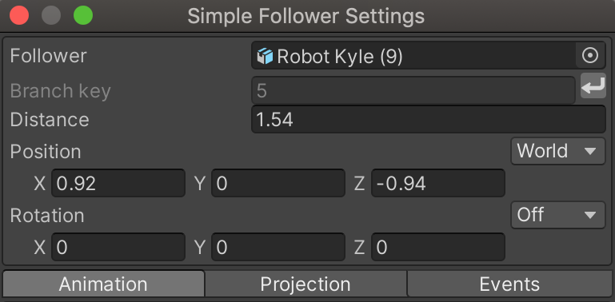
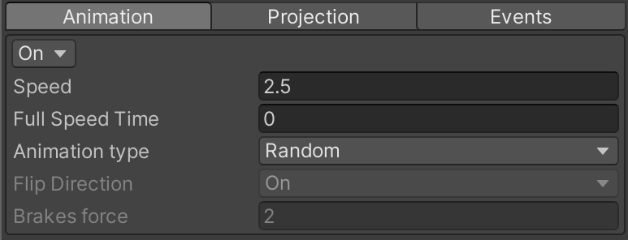
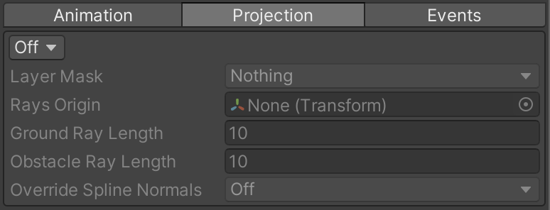
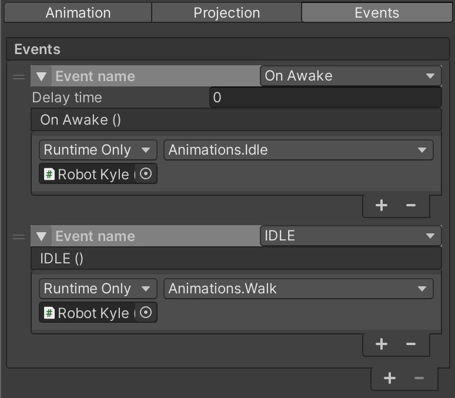
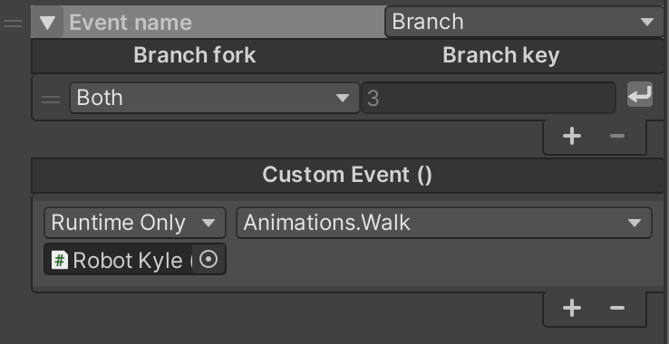

Settings

| Variables | Description |
|---|---|
| Follower game object slot | The game object that you want to use as follower, |
| Branch key | the current branch key the follower is on, To set a branch key for the follower, select the branch from your scene view then click on |
| Distance | The current distance of the follower on the branch, the max is the length of the branch. |
| Position | Translation of the follower with a button to switch between World and local space. |
| Rotation | Rotation of the follower, with a button to turn Rotation On/Off in case this was needed. |
Animation

| Variables | Description |
|---|---|
| Speed | The speed of the follower. |
| Full Speed Time | The time it takes the follower to reach full speed. this is used to create a smooth animation at the start and at the end of the follower animation. |
| Follower animation type | “ Random ” move your follower with a defined speed along the spline. branch picking decision is made randomly at intersection “Keyboard ” move your follower using keyboard. branch picking decision is made based on direction keyboard inputs |
| Flip Direction | "Keyboard animation type only", change the follower facing direction based on keyboard inputs |
| Brakes | "Keyboard animation type only", brakes force applied. |
Projection

| Variables | Description |
|---|---|
| On/Off | Enable/Disable projected path following. |
| Layer Mask | Specify layers to consider by your projection rays |
| Ray transform | Used to define the transform that will hold the rays. |
| Ground Ray Length | used to edit the ground sensor ray length. |
| Obstacle Ray Length | used to edit the obstacle sensor ray length. |
| Override Spline Normals | The follower will use the ground mesh normals if set to true, if set to false, follower will use spline normals raw data instead. |
Events

| Variables | Description |
|---|---|
| Event Name | Editable text field to customize your event name |
| Type | the type of event you want to use, there are 5 events , Custom, On Awake, On Move, IDLE, On Key Pressed |
Branch

Trigger events based on the current branch of the follower.
| Variables | Description |
|---|---|
| Branch fork type | The branch fork type you want as a condition for the events scheduled bellow to trigger there are 3 options available Both:No matter what branch fork the follower is on, events scheduled will be triggered once follower is on the defined branchbeginning: Events scheduled will be triggered once follower is on the beginning of the branch defined. end: Events scheduled will be triggered once follower is on the end of the branch defined. |
| branch key | The branch key of the branch that the scheduled events will trigger once the follower is on. |
| Events | the events scheduled to be triggered once one of the conditions on top is met |
OnAwake
Triggered once the game starts,
| Variables | Description |
|---|---|
| Delay time | The delay time of triggering the OnAwake events listed bellow |
| OnAwake Events | Events you want to trigger once you start the game. |
OnMove
Triggered once follower starts moving after stoping.
| Variables | Description |
|---|---|
| OnMove Events | Events you want to trigger when follower starts moving |
IDLE
Triggered once follower stops moving.
| Variables | Description |
|---|---|
| IDLE Events | Events you want to trigger when follower stops moving |
OnKeyPressed
Triggered once a defined key is pressed.
| Variables | Description |
|---|---|
| Key | The key code you want to press to trigger the OnPressed events listed bellow. |
| OnPressed Events | Events you want to trigger once the key set on top is pressed. |